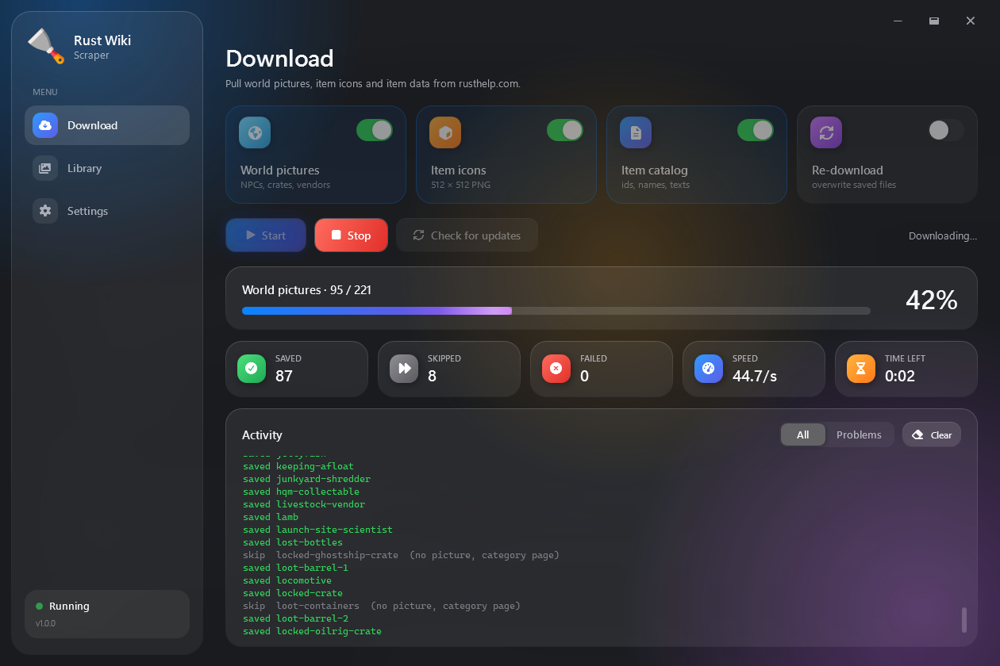
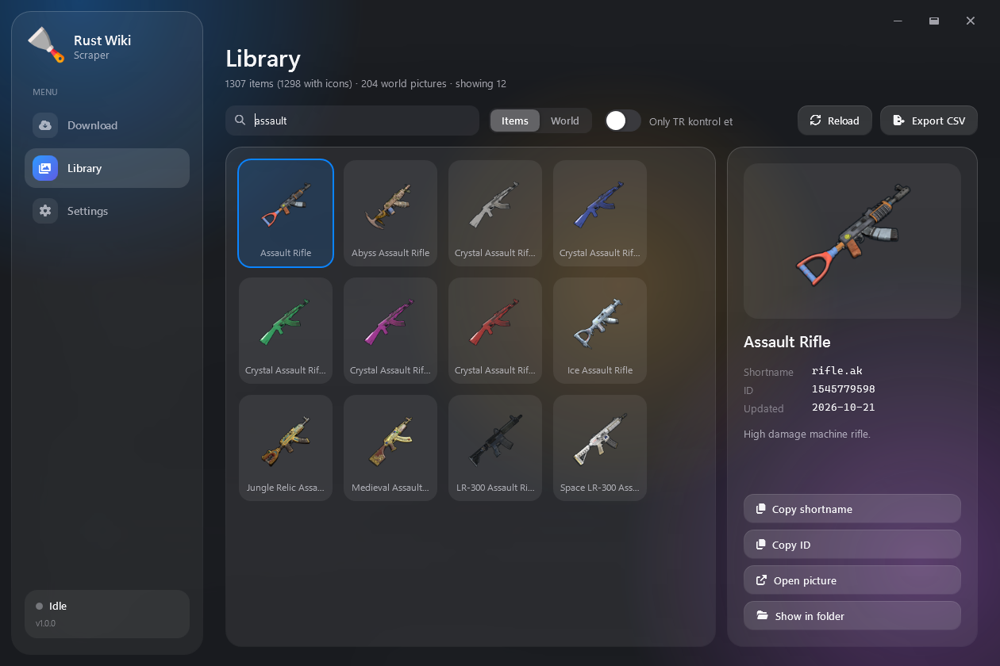
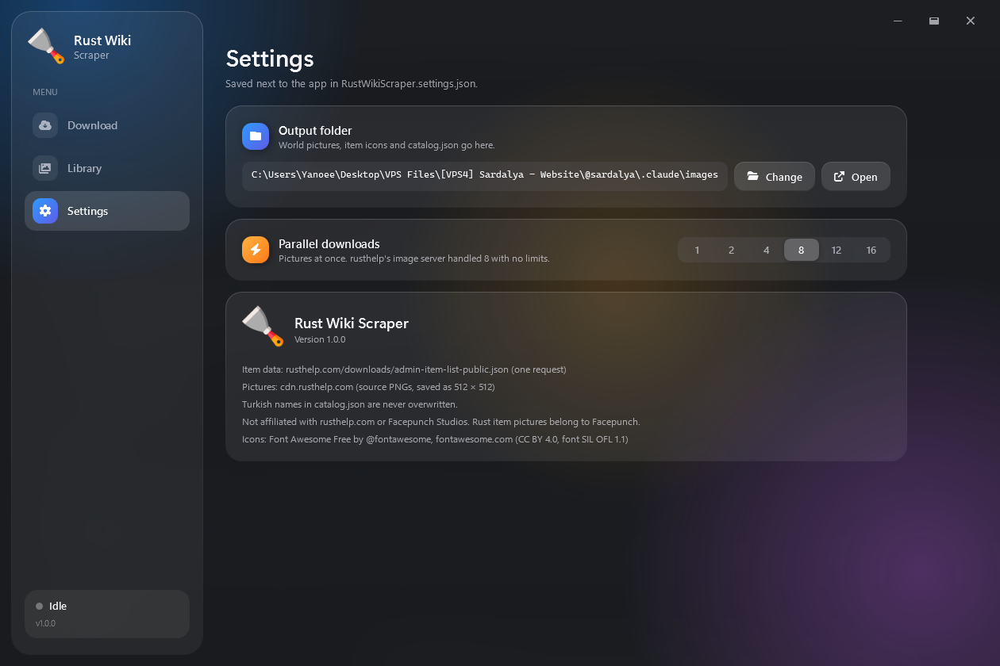

Downloads Rust icons. Considerably overbuilt for that.

I was bored and my Rust server's icons were a mess. A folder and twenty minutes would have fixed that. I went with a frosted-glass desktop app instead.
It could have scraped the whole wiki. Loot tables, recipes, raid costs, all of it. It doesn't. I keep that power under control.
Plus several things it didn't.
512 × 512 PNG, named by shortname. About 1,300 in roughly thirty seconds.
NPCs, crates, vendors. Around 200 of them. You will use four.
IDs, names and descriptions, plus a translation field it never touches.
See what rusthelp added, renamed or dropped without downloading anything.
Browse what you hoarded. Search it, copy IDs, export it to CSV.
Frosted glass, floating icons, buttons that wobble. None of it was asked for.


One file. No installer, no runtime, no account.
Windows will probably ask if you trust it. Your call.
Everything lands next to the exe. That's it.
"rifle.ak": { "id": 1545779598, "name": { "en": "Assault Rifle", "tr": "Saldırı Tüfeği" }, "desc": { "en": "High damage machine rifle.", "tr": "" }, "icon": { "src": "rifle.ak.png", "sha256": "...", "updated": "2026-10-22" }, "tr_check": false, "removed": false }
No.
It seemed like the most effort.
If I get bored again. Historically, I do.
No.
It's MIT. Build it, fork it, rewrite it in Rust for the irony. I don't really care.